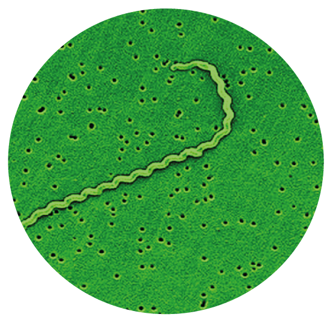

Afinal de contas, o que é essa doença?
A leptospirose é uma doença infecciosa causada através da exposição direta ou indireta da urina de animais (principalmente ratos) que estão infectados pela bactéria Leptospira.
Bactéria helicoidal (espiroqueta) aeróbica obrigatória do gênero Leptospira.
Quais são os sintomas dessa doença?
Febre, dor de cabeça, dores pelo corpo, principalmente nas panturrilhas (batata-da-perna), vômitos, diarreia e tosse são os sintomas da Leptospirose. Nas formas mais graves geralmente aparece icterícia (coloração amarelada da pele e dos olhos). A pessoa infectada também pode apresentar hemorragias, meningite, insuficiência renal, hepática e respiratória.
Como essa doença é transmitida?
As Leptospiras presentes na água de enchentes ou inundações penetram no corpo humano pela pele, principalmente se houver algum arranhão ou ferimento. O contato com água ou lama de esgoto, lagoas ou rios contaminados e terrenos baldios com a presença de ratos também podem facilitar a transmissão da Leptospirose.
Como essa doença é tratada?
O tratamento é baseado no uso de medicamentos e outras medidas de suporte, sempre orientado por um médico, de acordo com os sintomas apresentados. Os casos mais leves podem ser tratados em um ambulatório, mas os casos mais graves precisam de internação hospitalar.
Como prevenir essa doença?
Para evitar a Leptospirose, são necessárias medidas ligadas ao meio ambiente, como obras de saneamento básico, melhorias nas habitações humanas e o combate aos ratos. Evitar o contato com água ou lama de enchentes e impedir que crianças nadem ou brinquem em águas ou outros ambientes que possam estar contaminados pela urina de ratos.
A pessoa que apresentar febre, dor de cabeça e dores no corpo, alguns dias depois de ter entrado em contato com as águas de enchente ou esgoto, deve procurar imediatamente o Centro de Saúde mais próximo.